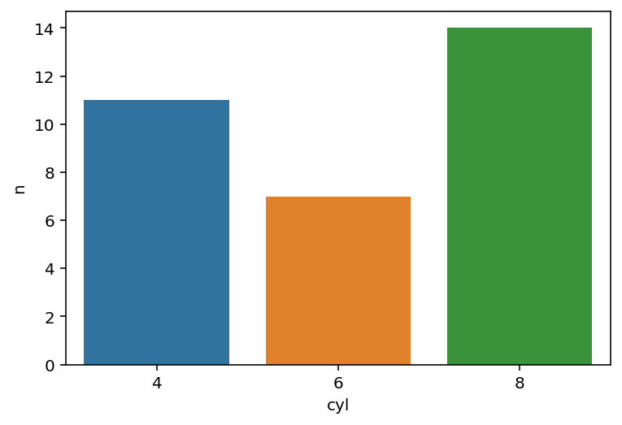

from siuba import _, count, filter, mutate, select
from siuba.data import mtcarsVerbs and Column Operations
Table verbs take one or more tables as input, and return a table as output.
Syntax
# preferred: pipe data to verb
mtcars >> count(_.cyl)| cyl | n | |
|---|---|---|
| 0 | 4 | 11 |
| 1 | 6 | 7 |
| 2 | 8 | 14 |
# call directly
count(mtcars, _.cyl)Verbs using tidyselection
Some verbs—like select() for keeping specific columns—use a special syntax called tidyselection. This syntax can be thought of as a mini-language for specifying a set of columns, either by inclusion or exclusion.
# keep cyl column
mtcars >> select(_.cyl)
# keep all *except* cyl column
mtcars >> select(-_.cyl)
# complex select, plus rename cyl to cylinder
mtcars >> select(_.cylinder == _.cyl, _.startswith("m"))# keep cyl column
mtcars[["cyl"]]
# keep all *except* cyl column
mtcars.drop(["cyl"], axis=1)
# complex select, plus rename cyl to cylinder
cols = mtcars.columns
mtcars.loc[:, (cols == "cyl") | cols.str.startswith("m")] \
.rename({"cyl": "cylinder"})More options for tidyselection exist, such as matching patterns, or slicing. See the select columns page for a discussion of all tidyselect options.
Pipe to DataFrame methods
Sometimes it is helpful to use Pandas DataFrame methods, in addition to siuba verbs. This can be done by piping the data to _.<some_method>().
Here is an example using the siuba verb count(), with the pandas method .sort_values().
(mtcars
>> count(_.cyl) # this is a siuba verb
>> _.sort_values("n") # this is a pandas method
)| cyl | n | |
|---|---|---|
| 1 | 6 | 7 |
| 0 | 4 | 11 |
| 2 | 8 | 14 |
Here is another example, using the DataFrame .shape attribute.
# siuba pipe
mtcars >> _.shape[0]32# regular pandas
mtcars.shape[0]Call external functions
A major advantage of using the pipe approach is that you can pipe any object (e.g. a DataFrame) to any function, using call().
The example below pipes to the seaborn’s barplot function.
from siuba.siu import call
import seaborn as sns
mtcars >> count(_.cyl) >> call(sns.barplot, x="cyl", y="n", data=_)<AxesSubplot:xlabel='cyl', ylabel='n'>
Note that sns.barplot() expects the data as a named argument, so we pass data=_, where _ is a placeholder for the data.
call() can also take a single function to call the data on.
# piping
mtcars >> call(len)32# regular function call
len(mtcars)32Learning more
- common table verbs section
- custom verbs
- flexible pipes